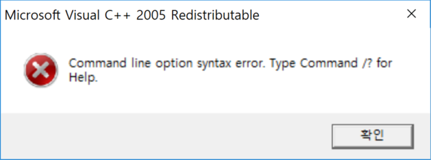

컴퓨터를 잘 다루는 사람이라면 오류가 뜨더라도 검색같은 방법을 통해 해결할 수 있는 가능성이 높지만,
컴퓨터를 다루는 것이 익숙하지 않은 사람들,
일명 '컴맹'이라고 불리는 사람들은 오류가 뜨면 당황을 하며 패닉상태에 빠져 무슨 상황인지 파악조차 하지 못한다.
다만 정체모를 오류창을 보고 아, 고장났구나만 알 뿐이다.
오류가 나도 왜 떴는지 모르고 '그냥 엔터만 눌렀는데 저렇게 되었다!'라고 인식하기도 한다.
그런 사람들에게 스스로 오류를 해결하는 방법을 알아내는 것은 놀라운 일에 속한다.
그런 컴맹들을 위해, 오류 해결 방법을 찾는 것을 도와주는 사이트가 있으면 어떨까 하는 생각이 들었다.
생각했던 서비스의 주요 기능은
등이 있었다.

(예를 들어 이런 에러 메시지라면,
'Command line option syntax error. Type Command /? for Help'를 그대로 치는 식으로)
구현할 방법을 몰라 아직은 힘들지만, 언젠가 실력이 늘면 구현해도 좋을 것 같다.